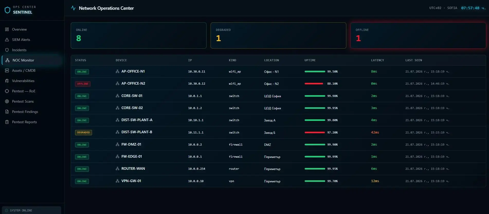

Network Operations Center
NOC услуги 24/7
Проактивно наблюдение и управление на мрежи, сървъри и инфраструктура, за да откриваме техническите проблеми преди да се превърнат в бизнес прекъсване.

По-малко прекъсвания
Оперативна видимост върху инфраструктурата
NOC екипът следи наличността и производителността, обработва аларми и поддържа ясна процедура за ескалация. Така вътрешният IT екип може да се фокусира върху развитие, а не върху постоянно гасене на пожари.
- 24/7 инфраструктурен мониторингНаблюдение на устройства, връзки, сървъри и услуги.
- Управление на капацитетаРанно откриване на претоварване и повтарящи се проблеми.
- Техническа ескалацияПодреждане на сигналите и действия според влиянието върху бизнеса.
- Документация и отчетиИстория на събитията, SLA показатели и препоръки за подобрение.
NOC + SOC
Мрежовата наличност и сигурността работят заедно
Интегрираме NOC и SOC процесите, за да се различават техническите откази от сигурностните събития и да се ускорява реакцията. Решението е подходящо за корпоративни, MikroTik и хибридни инфраструктури.
Често задавани въпроси
NOC услуги
Какво наблюдава NOC екипът?
Наблюдаваме мрежови устройства, връзки, сървъри, приложения и ключови показатели за наличност и производителност.
Работи ли NOC услугата с MikroTik?
Да. Можем да наблюдаваме и управляваме MikroTik RouterOS инфраструктура и да я интегрираме със SOC процесите.
Обхват, срокове и оферта
Как се формират обхватът и офертата за NOC услуги
Всеки ангажимент се договорира писмено след кратка оценка на средата. Етапите, отговорностите и правата за действие се описват в предложението, а сроковете за реакция и нивата на обслужване (SLA) се договарят индивидуално според критичните ви активи и приоритети.
- Брой мрежови устройства и връзкиРутери, превключватели, линии и услуги.
- Ниво на наблюдениеМониторинг, аларми и ескалация според критичните услуги.
- Прозорци за поддръжкаОбхват и време за реакция при отказ или влошаване.
- Интеграция със SOCСподелени източници и сигнали между мрежовия и сигурностния екип.
Офертата се формира след оценка на тези фактори — заявете консултация или минете през NIS2/DORA самооценката.